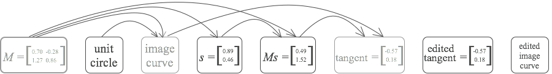

During an interview with the theoretical physicist Richard Feynman, the historian of science Charles Weiner casually describes Feynman's notebooks as a “record of the day-to-day work”. Feynman corrects him, saying “I actually did the work on the paper”. After some back-and-forth, Weiner tries to restate his point: “Well, the work was done in your head but the record of it is still here.” But Feynman insists: “No, it's not a record, not really, it's working. You have to work on paper and this is the paper. OK?”
The interview was recorded in 1973, when paper-and-pencil was the most commonly used medium for exploratory mathematical work. In the years since, media environments such as Mathematica and Matlab have been developed. These media help users explore mathematics in powerful new ways, ways essentially different from paper-and-pencil. But although useful, I believe these programs are merely first steps toward far more powerful media for doing mathematics.
This essay is about the question: how can we design a more powerful computational medium for mathematics? To make progress on that question, we'll experiment with some simple prototype media forms, with (very) loosely the flavour of a kind of “Photoshop-for-mathematics”. Through this experimentation, we'll distill some principles which can help in the design of a powerful medium for mathematics.
Much work on media for mathematics is done in the context of toy problems, of the kind seen in school textbooks. We'll take a different approach, developing our prototypes as we work through a piece of genuine mathematics. It's one of my favourite mathematical theorems, a result in linear algebra called the singular value decomposition, or SVD for short. This is less accessible than working through a toy problem, but forces us to confront and (partially!) overcome exactly the kinds of problems which arise in real mathematical work.
If you're not familiar with the SVD, it's a way of breaking a matrix up into three simple components. For example, for a real $2 \times 2$ matrix $M$, the SVD guarantees that it's always possible to break $M$ up into a rotation about the origin, followed by a rescaling of the axes, followed by a second rotation about the origin. Each of these three components is easy to reason about individually, and that often makes it easy to reason about the matrix as a whole. The great thing about the SVD is that it guarantees that every $2 \times 2$ matrix can be broken up in this way, for suitable choices of rotations and rescaling** Actually, the full statement of the SVD is slightly more complex. I'll explain it in a moment.. It's a bit like the way knowing the prime factorization of a number can make it easier to reason about that number.
The SVD doesn't just apply to $2 \times 2$ matrices. For a real $n \times n$ matrix $M$, the SVD says such a matrix can always be decomposed as** There are versions of the SVD which apply to non-square matrices, to infinite matrices and linear operators, and to matrices over fields other than the real numbers. For our purpose, the $n \times n$ real case is a good level of generality, and many of the ideas can, in any case, be reused in more general contexts.
\begin{eqnarray} M = U \, {\rm diag}(s_1, s_2, \ldots, s_n) \, V. \end{eqnarray}
Here, the matrices $U$ and $V$ are real $n \times n$ orthogonal matrices. As you may guess from the earlier discussion, orthogonal matrices are generalizations of the 2-dimensional rotations. In particular, they're simply matrices which preserve length in $n$ dimensions, just as rotations preserve length in 2 dimensions. That is, if $U$ is an orthogonal matrix and $v$ is any vector, then the length $\|U v\|$ is always the same as the length $\|v\|$. Formally, a square matrix $U$ is defined to be orthogonal if $U^T U = I$, where $T$ is the transpose operation, and $I$ is the identity matrix** To see how this relates to length preservation, observe that $\|v\|^2 = v^T v$, i.e., the sum of the squares of the components of $v$. Using this observation we have $\|Uv \|^2 = v^T U^T U v = v^T v = \|v\|^2$, where we substituted $U^T U = I$ to obtain the second equality.. And so in the case of the SVD we have $U^TU = I$ and $V^T V$.
The other part of the singular value decomposition $(1)$ was the diagonal matrix ${\rm diag}(s_1, s_2, \ldots, s_n)$. The diagonal entries $s_1 \geq s_2 \geq \ldots \geq s_n \geq 0$ are known as the singular values of the matrix $M$. These singular values simply rescale the corresponding directions in $n$-dimensional vector space. Putting it all together, the SVD tells us that any matrix can be broken up into an orthogonal “rotation”, followed by a rescaling, followed by another orthogonal “rotation”** I told a small lie in my explanation of the $2 \times 2$ case. The $2 \times 2$ orthogonal matrices include not just rotations, but also reflections. As an example, consider the matrix $\begin{bmatrix} 1 & 0 \\ 0 & -1 \end{bmatrix}$, which reflects about the $x$ axis. It's easily verified that this is an orthogonal matrix. In fact, you can show that an arbitrary $2 \times 2$ orthogonal matrix is either a rotation, or can be written as a product of $\begin{bmatrix} 1 & 0 \\ 0 & -1 \end{bmatrix}$ with a rotation. In practice, you mostly won't be led astray if you ignore the reflections, and think of orthogonal matrices as rotations in $n$ dimensions..
While we're going to prove the SVD, the proof is not the main point of the essay. It's merely a stalking horse, a goal to pursue as part of a larger research agenda of understanding how to create more powerful user interfaces for mathematics. As such, I will take it for granted that you're willing to believe the SVD is interesting. This means we won't get deeply into the applications of the SVD: it's just not the point of the essay.
With that said, it's worth knowing that the SVD is a very widely-used tool, for applications ranging from natural language processing to quantum computing to the comparison of protein structures. Indeed, it's one of the most useful tools in linear algebra, and arguably in all of mathematics.
To read the essay, you will need to be comfortable with basic linear algebra, at about the level already required to follow this introduction. In particular, you should be comfortable with notions such as the transpose, matrix multiplication, orthonormality, and so on.
1. A proof of the SVD for $2 \times 2$ matrices
In this section I explain the proof of the SVD in the case when $M$ is a $2 \times 2$ matrix. This proof turns out to contain all the essential ideas needed for the general proof, which we'll work through later.
Rather than attack the problem head-on, let's start with a simpler (and arguably more natural) problem that at first appears unrelated. In fact, as we attempt to solve this problem our explorations will lead us to re-discover the SVD.
The simpler problem is the question of how much a $2 \times 2$ matrix $M$ stretches space? To understand what I mean by stretching space, consider the matrix
$$M = \begin{bmatrix} 1 & 1 \\ 1 & 0 \end{bmatrix}.$$If we let this matrix act on the vector $(1, 0) \equiv \begin{bmatrix} 1 \\ 0 \end{bmatrix}$ the vector becomes
$$M \begin{bmatrix} 1 \\ 0 \end{bmatrix} = \begin{bmatrix} 1 \\ 1 \end{bmatrix} $$The input vector $(1, 0)$ has length $1$, while the output vector $(1, 1)$ has length $\sqrt 2$. So for this particular input vector the matrix has stretched the input to become a factor $\sqrt{2}$ longer.
Of course, $(1, 0)$ isn't the only possible input vector. If the input were, say, $(0, 1)$ the output would be $M(0, 1) = (1, 0)$, which is the same length as the input. In that direction, $M$ doesn't stretch space at all.
The question we'll investigate is this: what is the maximal degree of stretching associated to some given matrix, $M$? In other words, if we consider all unit vectors $v$, what is the maximal value for the length $\| M v\|$?
I'm abusing terminology a little here – $M$ might actually shrink unit vectors in every direction. But the term “stretch” is evocative, so we'll keep using it** Stretching is not a standard mathematical term. Mathematicians often refer to this maximal stretching as the matrix norm, or, a little more formally, as the matrix norm induced by the Euclidean distance..
We won't solve this problem immediately, but will do a little exploration that helps us understand the problem. The exploration will be illustrated using a rough prototype of a visual environment for doing linear algebra. To start the demo, please click “Play” below. Of course, in a real medium, you'd be able to interrupt, do your own exploration, and so on. But this is just a prototype, and so I haven't built things out that far. Here it is:
Let's fill in the algebra skipped above. Let $T$ be the tangent at $Ms$. Because $T$ is the tangent to the image curve, points on the image curve near $Ms$ can be written as $Ms+\Delta T + O(\Delta^2)$ for some small parameter $\Delta$. The squared length of that vector is:
$$\|Ms+\Delta T + O(\Delta^2)\|^2 = \|Ms\|^2+ 2 \Delta \, Ms \cdot T + O(\Delta^2)$$
But $Ms \cdot T > 0$, so for small $\Delta$ we have $\|Ms+\Delta T + O(\Delta^2)\|^2 > \|Ms\|^2$, i.e., moving along the image curve does, indeed, give us a vector longer than $Ms$. That's a rigorous proof of what we wanted to show.
So we've learned that the tangent to the image curve at $Ms$ is orthogonal to $Ms$. It'd be good to make this observation more explicit, expressing the tangent $T$ in terms of existing quantities like $M$ and $s$. To do this, recall that the image curve arose by applying $M$ to the unit circle. It should be plausible that the tangent to the image curve at $Ms$ is just $Mt$ where $t$ is the tangent to the unit circle at $s$. This can be proved with a tiny bit of calculus** I won't go through the details, though it's a good exercise if it's not immediately obvious. Incidentally, this is standard calculus, and so could easily be something the mathematical medium just “knows”.. Let's illustrate the situation:
We can make things even more explicit, noting that the tangent $t$ is orthogonal to $s$, since it's the tangent to a circle. And so the previous observation the tangent to the image curve at $Ms$ is orthogonal to $Ms$ can be rewritten as:
Lemma: Let $s$ be the principal right singular vector of $M$, and let $t$ be orthonormal to $s$. Then $Ms$ is orthogonal to $Mt$.
Visually, we can illustrate this lemma, redrawing the above diagram but moving $t$ to the origin, to emphasize that it's orthogonal to $s$:
The lemma tells us that the principal right singular vector $s$ is a very special vector. For orthonormal vectors $s$ and $t$ it usually is not the case that $Ms$ is orthonormal to $Mt$. What we learn from the lemma is that this is, however, true for the principal right singular vector. That's a powerful thing to know.
In fact, it actually lets us (easily!) prove the SVD for $2 \times 2$ matrices. Let's use the lemma to explicitly construct each of the rotation-rescaling-rotation steps, in terms of $s, t, Ms$ and $Mt$. As before press “Play” on the demo below. Note that this is no longer intended to represent a prototype cognitive medium, for reasons that will become apparent later.
To recap, the SVD first rotates the principal right singular vector $s$ to the first co-ordinate axis. This rotation automatically rotates a vector $t$ (which is orthonormal to $s$) to the second co-ordinate axis. We then rescale the first co-ordinate axis by a factor $\|Ms\|$, and the second co-ordinate axis by a factor $\|Mt\|$. And finally we rotate the rescaled vectors to $Ms$ and $Mt$. This last step makes crucial use of the lemma, since it's only possible because $Ms$ and $Mt$ are orthogonal.
By construction, this rotation-rescaling-rotation combination takes $s$ to $Ms$ and $t$ to $Mt$. In fact, it follows that the rotation-rescaling-rotation combination does the same as $M$ for all possible inputs. The reason is that $s$ and $t$ form a basis for the vector space. Since both $M$ and the rotation-rescaling-rotation act linearly on vectors, it follows that $M$ and the rotation-rescaling-rotation have the same action on all vectors. Thus, $M$ is equal to the rotation-rescaling-rotation operation. And so we've proved the singular value decomposition for $2 \times 2$ matrices** Note that to prove the SVD all that's required is that $Ms \perp Mt$ for some orthonormal vectors $s$ and $t$. We could have proved the SVD even if $s$ wasn't the principal right singular vector. In $2d$ there are easy proofs that such vectors exist, without using the notion of the principal right singular vector. However, such proofs do not, so far as I know, generalize to higher dimensions, while the current proof does generalize easily to higher dimensions..
Well, that's pretty nice! We started out with a question about how much a matrix stretches space, and were led to discover the singular value decomposition with only a little extra imagination. In fact, while our proof of the SVD was in $2$ dimensions, as noted earlier our proof can be extended to $n$ dimensions. That generalization is actually somewhat incidental to the main point of this essay, so I've sketched it out in Appendix A.
An interesting aspect of the proof is that we actually haven't solved our original problem: to figure out what the maximal degree of stretching is. This mirrors what often happens in real mathematical work – you may not solve the problem you originally intended to solve, but you learn something interesting anyway! In fact, it's possible to use the SVD to solve our original problem, finding the maximal stretching. Again, this is somewhat incidental to the main point of this essay, and so I describe how to do it in Appendix B.
The explanation just given is simple enough, but it's not really an ideal exposition. It's worth noting that this medium is not ideal as an explanatory medium. It's not intended to be. The point of this essay is only secondarily about explaining the SVD. The primary point is about understanding more about media for doing the exploratory work that occurs in real mathematical problem solving. Such work is inherently a messy and ad hoc process. You explore, looking for connections, following up leads, trying to develop your understand. In that context, you can think of the words at the top of the prototype as (very roughly speaking) a record of what might be thought by a person as they explore. In an ideal explanation, by contrast, there is a much more pristine and cleaned up narrative. That sort of easily-followed explanation isn't the goal here.
2 Semi-concrete reasoning
2.1 The problem
I glossed over a very interesting moment in our proof of the SVD. It's the point at which we asked what would happen if the tangent vector had a component in the direction of $Ms$. Let me show you again what happens. It takes just a few seconds:
XXXFrom the user's point of view this looks simple and natural. But actually something remarkably sophisticated would need to happen under the hood. To understand why that's the case, let's think in more detail about how the medium would model these actions. A natural approach is to start with a matrix $M$ which has some generic values filled in. In fact, the values for $s, t, \ldots$ shown above are produced by the following matrix $M$:
$$M = \begin{bmatrix} 0.70 & -0.28 \\ 1.27 & 0.86 \end{bmatrix} $$
So, for example, the image curve is computed by applying this particular $M$ to the points making up the unit circe. And the principal right singular vector $s$ is computed from $M$. And so on, for all the properties that are computed.
What we're doing here is somewhat peculiar. Our goal is reason about some general class of objects – all the $2 \times 2$ matrices. But to do that our medium has picked out one $2 \times 2$ matrix in particular, and is using it as a generic example. The benefit is that this lets the medium do all computations explicitly, so we can reason from concrete, easily-understood and visualized examples. At the same time, because the matrix chosen was generic, we have a chance of reaching general conclusions. So, for instance, using a concrete example makes it easy to notice that $Ms$ is orthogonal to $Mt$ when $s$ is the principal right singular vector, and $t$ is orthogonal to $s$. Of course, this observation holds only for this specific matrix $M$. But the fact that the example is generic makes it plausible that this phenomenon holds for any $2 \times 2$ matrix $M$. Indeed, it would be easy to check for other choices of $M$, though I didn't explicitly show that happening.
Mathematicians routinely use this kind of reasoning from concrete-but-generic examples to gain insight. That's been common practice all through mathematical history, but has become especially attractive with the relatively recent advent of computers** The strategy of using concrete-but-generic examples sometimes fails. There's an art to picking out good generic examples, examples that won't mislead you. That's not a problem I'm going to discuss in detail, but it's a fascinating subject. If you want to develop a good medium for doing mathematics, I suspect it's a subject which would need to be investigated in great depth..
Now, what happens when we change $Mt$ from its real value to the trial value, not orthogonal to $Ms$?
XXXBefore the change the medium was keeping track of the following objects:
M: a 2 by 2 matrix, with entries 0.70, -0.28, ... The unit circle The image of the unit circle under M s: the principal right singular vector, with entries 0.89, 0.46 Ms: the result of applying M to s, with entries 0.49, 1.52 The tangent to the image at Ms, with entries -0.57, 0.18
What happens to the internal state of the medium when we
change the tangent? Of course, our internal representation of
the tangent must change. But, in fact, we're in something of
a pickle, since there is no matrix $M$ which has the desired
values for $Ms$ and the tangent. So we declare the value of
$M$ to be undefined. If we do that, then $s$,
the principal right singular vector of $M$, is
also undefined. Indeed, the entire image of the
unit circle under $M$ would be undefined. In
fact, the only thing which is still defined is the unit
circle, which had nothing to do with $M$!
In a sense, the problem here is that we're in an impossible
world. When we change the value of the tangent we actually
move into a world which does not exist. And yet we'd like to
be able to continue reasoning. That means developing an
internal model that lets us keep going. Can't simply set our
values to be undefined. That means giving up.
To support this kind of reasoning we need more powerful ideas
about how to represent what's going on.
A mathematician working with paper and pencil finds it easy and natural to carry out this kind of reasoning. Paper-and-pencil does no computation or constraint-checking whatsoever. That imposes a heavy burden on the mathematician, who must do the computations and constraint-checking themselves. But it also gives them a lot of flexibility to easily carry out this kind of hypothetical reasoning.
What we'd like is a medium which supports a kind of semi-concrete reasoning. It would simultaneously provide: (1) the ability to compute concretely, to apply constraints, and to make inferences; and (2) the benefits of paper-and-pencil, notably the flexibility to explore and make inferences about impossible worlds. Our earlier discussion shows there is tension between these requirements. Yet both must be satisfied simultaneously in a powerful exploratory medium for mathematics.
In the next section I sketch an approach to building a system for semi-concrete reasoning. The treatment is not complete. As we shall see, the problem is in general a deep problem, with an open-ended component which is about the psychology of the user, and what constitues “natural” modes of mathematical inference. And so the purpose of the following discussion is to identify some core questions and principles to be followed in such a system.
2.2 Principles of semi-concrete reasoning
In our earlier reasoning, we used the data as a way of representing mathematical reality. Because of this it was important to find and resolve contradictions. It's possible, however, to proceed in a different fashion. Rather than using the data as representing mathematical reality, we can treat the data as representing our current state of knowledge of the system. In this point of view user interface operations gradually build up a complex state of knowledge. So, for instance, after creating the tangent vector, but before drawing the connection to $t$, the state of knowledge may be depicted as:

Here, left-to-right denotes the time ordering in which we build these objects up, and arrows show dependencies between objects. Each time we apply the user interface to create a new mathematical object, the graph changes. So, for instance, when we create the image curve it is added to the graph, connected to the matrix $M$ and the unit circle, since it is determined by $M$ and by the points on the unit circle. Then we add the principal right singular vector $s$, which is determined by $M$ alone. And so on for $Ms$ and the tangent vector as well. I've greyed out the matrix $M$ since $M$ is not explicitly shown by the user interface, while all other elements are.
Using the data to represent our current state of knowledge makes sense in an exploratory medium. As part of our exploration, we can modify that state of knowledge. So, for instance, we may simply edit our mathematical world:
XXX: change the tangent. delete the image. Sketch in a modified image.This sequence of edits roughly corresponds to the kind of operations that might be performed by a human mathematician on paper. The internal state of the medium after the edits would be:
The original image curve and tangent have been greyed out, since they are no longer visible. Note that the edited does not depend on the original value for the tangent.
In this approach, just as with paper-and-pencil, it is up to the human user of the system to make inferences about how changes in one mathematical object propagate to affect other mathematical objects.
Of course, a big benefit of computers is that they can be used to make such inferences. In an exploratory medium, the purpose of the user interface is to give the user control over how these inferences are made, making the inferences easy to perform (so exploration is easy), and making it easy for the user to track the chain of reasoning.
In this specific instance what should the interface do? When we modify the tangent, we could plausibly modify $Ms$:
XXXOr, since the tangent is $Mt$, maybe it would cause a change to $t$:
XXXHow is the medium to know that the intended change is to the image curve?
XXXIn fact, there is a priori no logical way the medium can know. All of these (and others) might be appropriate in different contexts. However, consider the way in which the tangent was built up:
XXXThat is, the tangent was a function of $Ms$ and the image curve. When we change the tangent there is a corresponding space of possible values for $Ms$ and the image curve:
XXXThe task of the user interface is to present the user with a way of selecting from amongst that space. The simplest possible interface simply allows one to edit, and requires all inference to be done manually. This approach mirrors paper-and-pencil.
A more sophisticated interface may do more sophisticated inference:
XXXThis appears simple enough, but in fact something quite complex is going on. How does the interface know that the curve segment doesn't look like:
XXXor
XXXIn fact a reasonable answer to this question is XXX.
Is this the only option? No, it is not. In fact, it's perfec
Of course, many of our mathematical objects may depend on two or more previous objects. In that case, we may wish to consider situations in which both prior objects change:
XXXA challenge with this is that if two prior objects change, and we then continue to track changes further back, then the number of choices we have to make may quickly explode in complexity. It's tempting to conclude that there is something wrong going on.
The interface will necessarily explode in complexity. This looks bad.
Which is the right interface? More generally: we build up mathematical objects as functions of earlier objects: XXX. The task of the interface is to What we learn: Use a data state that reflects our state of knowledge, built up through user interface operations. Enable
Now, when we make the Now, when we make the change to $Mt$, we immediately update the SFC entries,
SFC: Mt has entries -0.15, 0.5
But we don't otherwise change the representation. This is despite the fact that this change to $Mt$ must imply many changes to other SFC facts. And so we are, for the sake of concreteness, tolerating a certain amount of contradiction.
In this sense, paper-and-pencil remains superior Our prototype attempts to combine the flexibility of paper and pencil with the support for computation that digital media make possible.
Better than paper. Why does this matter?Thanks to Dave Albert, Darius Bacon, Kovas Boguta, Ilona Brand, Jesse Tasse Gonzalez, Max McCrea, Prabhakar Ragde, Omar Rizwan, and John Workman for comments that helped improve this essay.
Appendix A: the proof of the SVD in $n$ dimensions
In the main body of the essay we learned how to prove the singular value decomposition in 2 dimensions. In fact, the same ideas can be used to prove the SVD in $n$ dimensions. I'll briefly sketch how the proof works in this appendix. It begins with exactly the same argument as we used earlier, showing that if $s$ is the principal right singular vector of $M$, and $t$ is any vector orthonormal to $s$, then $Ms$ is orthogonal to $Mt$. No modification is needed to establish this – the proof goes straight through.
From this, it can be shown using a construction similar to the $2 \times 2$ case that
$$M = U_1 \begin{bmatrix} s_1 & 0 \\ 0 & M' \end{bmatrix} V_1$$
where $U_1$ and $V_1$ are orthogonal matrices, and $M'$ is an $n-1$ by $n-1$ submatrix. Proving this is pretty straightforward, although it may be tedious if you're not so comfortable with linear algebra. I won't go through the details. We can repeat this decomposition, breaking $M'$ up in terms of orthogonal matrices in $n-1$ dimensions and an $n-2$ by $n-2$ submatrix $M''$. Continuing in this way until we reach two dimensions, we obtain
$$M = U_1 U_2 \ldots {\rm diag}(s_1, s_2, \ldots, s_n) \ldots V_2 V_1,$$
where $U_1, V_1, U_2, V_2, \ldots$ are all orthogonal matrices. Since a product of orthogonal matrices is itself an orthogonal matrix, we obtain
$$M = U \, {\rm diag}(s_1, s_2, \ldots, s_n) \, V$$
for orthogonal matrices $U$ and $V$. This is the singular value decomposition.
Appendix B: finding the maximal stretching for a matrix
Earlier in the essay we learnt that the degree of stretching for a matrix $M$ is equal to the largest singular value $s_1$. That is, suppose $M$ has singular value decomposition
$$M = R \,\mbox{diag}(s_1, s_2, \ldots, s_n) R'$$
with singular values $s_1 \geq s_2 \geq \ldots \geq s_n \geq 0$. Then the maximal degree of stretching is just
$$\max_{\|v \| = 1} \| Mv \| = s_1.$$
This is a nice connection, but it's not obvious it helps us figure out the maximal degree of stretching. Fortunately, with just a little work we can figure out $s_1$. To do this, observe that from the SVD we have
$$M^T M = R'^T \mbox{diag}(s_1^2, s_2^2, \ldots, s_n^2) R'$$
since $R$ is a rotation, and thus satisfies $R^T R = I$. Inspecting the last displayed equation, we see that the eigenvalues of $M^TM$ are just $s_1^2, s_2^2, \ldots$. And so $s_1$ is just the square root of the largest eigenvalue of $M^TM$. This eigenvalue is easy to compute, which makes the singular value $s_1$ easy to compute. And that, in turn, makes it easy to compute the maximal degree of stretching.
To sum up, the maximal degree of stretching for a matrix $M$ is just the square root of the largest eigenvalue of $M^TM$. This provides us with an easy, computationally feasible way of computing the stretching, solving the original problem we started with!
OLD MATERIAL
This demo is a rough prototype of a visual environment for doing linear algebra. Of course, I could have explained the principal right singular vector with static illustrations, and without the simulated mouse pointer, icons, and so on. But I want you to think of this as a prototype medium for someone doing real, live mathematical work – maybe someone explaining the SVD in a classroom, or someone trying to understand the SVD on their own. The commentary at the top is what the person is saying or thinking as they work. Of course, in a real application, you'd be able to interrupt, do your own exploration, and so on. But this is just a prototype, to explore ideas.
Semi-concrete reasoning
In the last section I proved the key claim using a series of still images. In so doing, I switched away from our prototype cognitive medium. The reason is interesting. We were considering $Ms$ and $Mt$, and asked ourselves what would happen if $Ms$ was not orthogonal to $Mt$?
In fact, we ultimately show that $Ms$ and $Mt$ are necessarily orthogonal, and so there's no matrix $M$ which has the values for $Ms$ and $Mt$ illustrated above. It's impossible, though we didn't know that at first. And so the diagram above actually depicts an impossible world.
Mathematicians engage in this kind of counterfactual reasoning all the time. They're happy to imagine an impossible world, and then play a game, saying: “What would happen if this world actually existed?”
I mention this because systems for doing mathematics by computer, such as Matlab and Mathematica, are often terrific at doing computations with concrete objects. They can verify in a flash that $Ms$ is orthogonal to $Mt$ for any specific choice of matrix $M$. But they don't necessarily make it so easy to do counterfactual reasoning. You can't ask Matlab to suppose that $Ms$ is not orthogonal to $Mt$. There's simply no facility in the program to do that. And, curiously, this actually makes it harder to discover the fact that $Ms$ is always orthogonal to $Mt$, for any $2 \times 2$ matrix $M$.
When doing mathematics with a static medium such as paper and pencil there is no automatic computation or constraint checking. The medium doesn't tell us it's not possible to change from
to
despite the fact that there is no matrix $M$ having those values for $Ms$ and $Mt$. This lack of constraint checking is both a feature and a bug. Because paper and pencil doesn't enforce this kind of constraint checking, it relies on the mathematician to do the constraint-checking in their head in a principled way** In this, it's much like the way weakly-typed programming languages rely on programmers to be careful about what gets passed to a function. Incidentally, I suspect the right answer to the question “Should my language be strong or weakly typed?” is “Both!”.. That's a substantial cognitive burden. But it also gives the mathematician the freedom to carry out arguments like we did in the last section.
Now, let's suppose we were to attempt to do this in our prototype medium. Here's how we'd start:
That looks reasonable enough, but actually something remarkably sophisticated would need to be happening under the hood. Think about what would need to happen to get to the initial plot of the image:
A natural way of doing this is to have the cognitive medium start with a matrix $M$ which has some generic values filled in. In fact, the values for $s$, $t$, $\ldots$ shown above are produced by the following matrix $M$:
$$M = \begin{bmatrix} 0.70 & -0.28 \\ 1.27 & 0.86 \end{bmatrix} $$
So, for example, the image is computed by literally applying $M$ to the points making up the unit circle.
So while we're trying to reason about some general class of objects – all the $2 \times 2$ matrices – in fact we've picked out one in particular, and use it as a generic example, for the sake of doing trial computations. The benefit of this strategy is that it lets us reason from concrete, easily-understood examples, but at the same time having a chance of reaching general conclusions. So, for instance, using a concrete example makes it easy to notice that $Ms$ is orthogonal to $Mt$ when $s$ is the principal right singular vector, and $t$ is orthogonal to $s$. Of course, this observation holds only for this specific matrix $M$. But the fact that the example is generic makes it plausible that this phenomenon holds for any $2 \times 2$ matrix $M$. Mathematicians have done this kind of reasoning from concrete-but-generic examples all through history. And the relatively recent advent of computers has made it even more convenient to explore such concrete-but-generic examples.
This strategy of using concrete-but-generic examples sometimes fails. There's an art to picking out good generic examples, examples that won't mislead you. That's not a topic I'm going to discuss in much detail here. However, it's a deep subject. And if you wanted to develop a good medium for doing mathematics, it's likely a subject you'd need to investigate in some depth. So it'd be worth investigating in detail.
Now, what happens when we change $Mt$ from its real value to the trial value, not orthogonal to $Ms$?
Before the change the medium was keeping track of the following objects:
M: a 2 by 2 matrix, with entries 0.70, -0.28, ... s: the principal right singular vector, with entries 0.89, 0.46 Ms: the result of applying M to s, with entries 0.49, 1.52 t: a vector orthonormal to s, with entries -0.46, 0.89 Mt: the result of applying M to t, with entries -0.57, 0.18 The unit circle The image of the unit circle under M
What happens to this internal state of the medium when we change $Mt$?
Obviously, our internal representation of $Mt$ must change, since we've changed the value.
But what about all the other objects the medium is tracking the internal state of?
Well, first, the value of $M$ itself is no longer the same.
In fact, there is no matrix $M$ which has the desired values
for $Ms$ and $Mt$. So we might be tempted to declare the
value for $M$ to be undefined.
If we do that, then $s$, the principal right singular vector
of $M$ is also undefined. And so $Ms$ must
be undefined. Furthermore, $t$, which is
orthonormal to $s$, must also be undefined, as is
$Mt$. Indeed, the entire image of the unit circle under $M$
would be undefined.
In fact, the only thing which is still defined is the unit circle, which had nothing to do with $M$!
In actual fact, although this approach seems plausible, it isn't a good way of proceeding. It's too pessimistic.
There's another problem in this picture. We start by supposing a particular value for $M$, which implies a particular value for the principal right singular vector, $s$, which implies a value for $t$. And so when we change the value of $Mt$ we actually get an immediate contradiction.
Let's try to develop an alternate internal representation.
Recall that in our first step we started by selecting the matrix icon.
Internally, our medium will represent this as a 2 by 2 matrix with unspecified entries. But we will suppose for concreteness (SFC) that $M$ has entries $0.70, -0.28, \ldots$. These are not supposed by the medium to be the actual entries in the matrix. Rather, they are merely presumed entries, to be used for purposes of concrete representation and manipulation in a user interface, and which can be used (if necessary) for future computations. At this stage our cognitive medium has the following internal representation:
M: a 2 by 2 matrix
SFC: M has entries 0.70, -0.28, ...
Our next step was to ask for the principal right singular vector, $s$. In the internal representation, we now have:
M: a 2 by 2 matrix
SFC: M has entries 0.70, -0.28, ...
s: principal right singular vector of M
SFC: s has entries 0.89, 0.46
Again, the entries for $s$ are not supposed by the medium to be actual values. Rather, they are for purpose of concrete representation and manipulation in the user interface.
Our medium is thus keeping track of two different types of fact. One is mathematical assertions &ndash ``$M$ is a $2 \times 2$ matrix'' or ``$s$ is the principal right singular vector of $M$'' – which are supposed to be literally true. And the other are assertions – ``$s$ has entries $0.89, 0.46$'' which are supposed to be true for the sake of concrete illustration, but which are not supposed to be literally true.
We continue in this way, building up a more complex internal representation, eventually arriving at:
M: a 2 by 2 matrix
SFC: M has entries 0.70, -0.28, ...
the unit circle
SFC: the image of the unit circle
s: principal right singular vector of M
SFC: s has entries 0.89, 0.46
Ms: the result of applying M to s
SFC: Ms has entries 0.49, 1.52
t: a vector orthonormal to s
SFC: t has entries -0.46, 0.89
Mt: the result of applying M to t
SFC: Mt has entries -0.57, 0.18
Now, when we make the change to $Mt$, we immediately update the SFC entries,
SFC: Mt has entries -0.15, 0.5
But we don't otherwise change the representation. This is despite the fact that this change to $Mt$ must imply many changes to other SFC facts. And so we are, for the sake of concreteness, tolerating a certain amount of contradiction.
Now, there are quite a few options at this point. It's worth thinking them all through in detail.
I rather suspect I would have done better to actually make $t$ arise in a different way. In particular, I should have made $t$ arise as the tangent to $s$ on the unit circle. And I should have made $Mt$ arise as the tangent to $Ms$ on the image.
Alright, let's make that update:
M: a 2 by 2 matrix
SFC: M has entries 0.70, -0.28, ...
the unit circle
SFC: the image of the unit circle
s: principal right singular vector of M
SFC: s has entries 0.89, 0.46
Ms: the result of applying M to s
SFC: Ms has entries 0.49, 1.52
t: a vector orthonormal to s
SFC: t has entries -0.46, 0.89
Mt: the result of applying M to t
SFC: Mt has entries -0.57, 0.18
Restructuring
The cognitive medium as an environment in which to think and discover. The medium is a prototype; not a real medium. Both very rough in some ways and rather idealized in others. Please try to look past the rough edges. In this section the focus will be on the mathematics. In the next section we'll extract some lessons about cognitive media in general.
Heuristically, at least, think about what we're informally doing when we change $Mt$ to be non-orthogonal to $Ms$. Informally, we're saying: let's suppose there is a hypothetical $M$ which has these explicit values for $s$, $Ms$, $t$ and $Mt$. We don't know
In a sense, the medium's model of the mathematical situation must actually have completely changed. ZZZ: Think this next stuff through. In other words, we're actually subselecting a set of facts. Now, at some level, we're actually getting a contradiction immediately. . They have different ontological statuses. I need to simply think this stuff through. That is all. Basically, take myself off and think about it for a while. I'll get it. I won't necessarily solve the problem. The right question: we'd like to maximize our ability to reason from concrete examples, to use the computer's ability at computation. So what internal representations should we use? The old NOTES: The obvious way to represent the objects simply does not work. I make what seems from the point of view of the interface a tiny change. And yet it must completely changes the underlying model. What is needed is a richer underlying model which allows a completely different type of mathematical reasoning. And yet it seems as though it's identical. MORE NOTES: Describing at checkins. "Let me try to give you the flavour of the problem I'm working on. So I'm working on user interface ideas for mathematics. And in my prototype interface I've found a situation where we need two completely different models for the same mathematical objects. Okay: one situation. Two entirely different representations. If you know databases, it's a bit like a really extreme case of denormalization. And what I'm trying to do is to find a single, unified model which gives both as a special case. Finding that single unified model is key to "In the movie The Fellowship of the Ring there is an early scene where the wizard Gandalf passes his hat and staff to the hobbit Bilbo. In the DVD commentary the director says this was extremely difficult to make work on film. The reason is that Gandalf is about 24 inches taller than Bilbo, but the actors are only about 5 inches different in height. Mostly the filmakers dealt with the height disparity by clever use of camera angles. But when directly passing the hat and staff this was not possible. Rather, digital effects had to be used to seamlessly make the transition between Gandalf and Bilbo.
At some point I'll need to do some background reading, lit review.The great advantage of the computer is that it lets us very easily do conrete reasoning. But it's also problematic. In the art of problem-solving, what you know (or suspect) changes as you proceed. You learn things rapidly. And so what you can conclude changes a lot.
In particular, at this point we're computing on the whole image:
XXX
But now we're computing just at the tangent:
XXX
Now, we can try sketching something out:
XXX (deformed ellipse)
But that's not actually a computed image for a real matrix. It can't be: no matrix has that. Rather, it's an evocation.
So what happens – part of the art of doing mathematics – is to show concrete images which evoke as much of the current situation as possible.
So what should we do about this? How should we cope with it?
I honestly don't know.
It means there's a fundamentally different status to this image (computed):
XXX
to this image (computed at a point, but otherwise an evocation):
XXX
One possible puritanical response is to say “Oh, we shouldn't do the former, this kind of thing isn't allowed.&rduo;
While that would be convenient, it'd also be putting our heads into the ground. Real mathematicians engage in this kind of reasoning all the time. Indeed, the ability to engage in this kind of reasoning seems to be essential to mathematical discovery. If we throw the ability out, then we greatly weaken our medium of discovery.
The ideal is to make use of the computer to do as much computation as possible to support.
Issue: the fact that sometimes it may be possible to do computations in multiple ways. I don't currently have a good example. Actually, maybe I do: are we assuming that the matrix has a particular value or not? In other words, on what do we base the computation of the image?
This is not a trivial point. The main purpose of this essay is to name the phenomenon, and to idnetify some of the key issues asccoaited to it. The advantage of naming it is that it makes it easy to recognize
I don't think there's likely a silver bullet solution. Rather, these are issues that need to be addressed over and over and over again as part of good interface design. Part of the reason I'm naming these phenomena is to make it easy to recognize the phenomena, and to respond to them.
The UI should be responsive to and reflect what we currently know and what we currently assume. That condition oc Sometimes, this means there are choices to be made. Human beings are extremely good at juggling multiple points of view. That juggling is not something that is typically thought of as central to user interface design. Polyviewing. My instinct, somehow, is that sometimes there may be two or more choices to be made. So, for example, in viewing this The purpose here is to identify an issue, and some partial solutions. the user interface needs to change to reflect that. This is not a trivial thing. When we do counterfactual reasoning we make very good use of partial theories. If you're a mathematician sketching this on paper, you never actually computed anything in the first place. You just made a guess: XXX And so you also make a guess when This looks simple and natural, but in fact looks are deceiving. Think about the recomputation step for the image: XXX There are two natural possibilities to use here. The reason is that there are, in fact, two natural possibilities to use when computing the image. One is to start The problem of semi-concrete reasoning. Actually, I don't know what it should look like here, to be honest. There are several possibilities. One is to have the image adjust Now, there's much that's interesting here. ZZZ Thinking: what's important here? I'm not sure what to say next. I have an instinct that something extremely important is going on. In particular, I think there is a phenomenon here that can teach us something about desirable properties for user interfaces for mathematics. But I don't acytually know what it is. The thing to do is to dig down deep, to try and figure it all out.Mentally, mathematicians keep track of two separate worlds here. They understand that
Cyc has micro-theories which are required to be free from contradictions. Questions What makes this possible: I actually don't really understand. What would you need to make this work? Is there a connection to Lenat's work on Cyc? The ability to find contradictions is overrated.x WHy would we have considered this approach to start? suppose, for example that $Ms \cdot Mt > 0$. In the context of our app, that would mean doing something like the following:That all looked very reasonable. But there's a very interesting thing here. There is, in fact, no matrix $M$ which has the values for $Ms$ and $Mt$ illustrated above. It's actually impossible.
It is possible to make these kinds of counterfactual assumptions in proof assistants such as Coq. In a simple case, suppose we want to prove that $\sqrt{2}$ is irrational. The standard proof is to start by supposing it is rational, so $\sqrt{2} = m/n$ for natural numbers $m$ and $n$. We then shows that this leads to a contradiction. In Coq it's possible to prove a theorem whose form is “Suppose there are natural numbers $m$ and $n$ such that $\sqrt{2} = m/n$. Then absurdity follows.”
In Coq we can do thisNow, imagine you're a mathematician working with paper and pencil, and are hoping to prove that $Ms$ and $Mt$ are orthogonal.
How might that look? We won't get a proof straight away. Rather, we'll just do some exploratory play that shows how it might look:
Alright, that's not a proof, though it does explain heuristically what's going on.
Can we get an actual proof?
So what do we learn from all this?
We learn that $Mu$ is orthogonal to $Mt$.
Or, to recap all that we've learnt: if $M$ is a $2 \times 2$ matrix, $t$ is the principal singular vector, and $u$ is perpendicult to $t$, then $Mu$ is perpendicular to $Mt$.
This has some nice consequences.
Think about what $M$ does. We can think of it as first rotating $t to the unit vector $e_x$ in the $x$ direction, and $u$ to the unit vector $e_y$ in the $y$ direction:
XXXWe'll call the corresponding rotation matrix $V$.
After that, rescale $e_x$ to be a length $s_1 \equiv \| M t \|$, and $e_y$ to be a length $s_2 \equiv \| Mu \|$:
XXXFinally, define a rotation $U$ which rotates $e_x$ to be a unit vector in the direction of $Mt$, and $e_y$ to be a unit vector in the direction of $Mu$. This is a legitimate rotation matrix because $Mu$ is orthogonal to $Mt$.
XXXSumming up, we have:
$$M = U {\rm diag}(s_1, s_2) V$$
This is just the singular value decomposition.
What am I doing this for? I believe that it's possible to build far more powerful cognitive media for both explanation and discovery. Who cares? Well, I want to help build those tools for thought. But the only way to build them is to make essays into the craft. This is looking through one in particular. What can we learn? I still don't know why I'm doing this. Why does it really matter? Well, it's an early example. I'm trying to learn what I need to learn in order to develop a good congitive medium. The picture that says it all: draw it. Principal singular vector. Unit circle. Tangent vector, u. Image. Tangent to image, Mu. This must be perp to Mt in order that this length be maximal, so u _|_ t implies Mu _|_ Mt. Now, there's a very interesting thing going on here. The nub of the proof is to show that Mu _|_ Mt. If we're using concrete values, then in fact that will automatically be the case. But the way a mathematician reasons, it's extremely helpful to suppose not. So the problem here is that a mathematician actually wants to do concrete reasoning about a world that doesn't actually entirely exist. On the prototypical nature: If you look, you'll see much of it is faked. For this kind of project, the challenge isn't in the innards. It's in understanding the interface. The difficult thing in a system like this isn't in understanding
Media for explanation versus media for exploration
In the essay so far I've provided an explanation of the singular value decomposition. It's one thing to explain a result. It's quite another to discover the result.
In particular, a medi
There are two things: one is to explain, the other is to provide an environment for explanation, an environment in which the proof. These are not at all the same thing. I'm going to start by looking at the former. Later I'll have some remarks on the latter. Writing science and mathematics on the open web I've written several hundred thousand words about science and mathematics on the open web. It can be extremely rewarding. I've Why do this? At some level, it looks unserious. Yes, it's pleasant to see these ideas come together. But there's a wide gap between this of prototype and real, running software. Is it just flashy stuff, fun but not ultimately useful? Another way of saying it: why not be building systems rather than building prototypes? The case for that: over the long run, we want running systems. Ideas and understanding also matter. OLD INTROCan we improve on paper and pencil as a medium for doing mathematics? In this interactive essay I work through some toy prototype media, exploring properties we would like such a medium to have. As an example, I'll use a piece of genuine mathematics, a proof of a famous result in linear algebra known as the singular value decomposition (SVD). Rather than presenting a conventional proof of the SVD, I'll explore alternate presentations.
The essay isn't an introduction to the singular value decomposition, nor is it primarily about mathematics, although you may find it of mathematical interest. Rather, the intent is to explore and prototype ways of doing mathematics in a dynamic medium. For this reason I'll assume you're already comfortable with concepts of elementary linear algebra – things like orthogonal matrices, diagonal matrices, and so on.
The singular value decomposition is a furphy, a stalking horse. Of course, I believe the essay has value as an explanation of the SVD. But the real game afoot is to think about what properties a cognitive medium that supports mathematics might have. Most systems for doing mathematics by computer are concrete. But an advantage of paper and pencil is that sometimes you can do impossible things. In other words, this is an instance where the computer is actually being asked to do less. It's being asked to ignore constraints. And this actually lets us do more. (This is surprisingly common in the history of symbol-making. Doing less is often more.) Alternate proof: Incidentally, our proof only relied on there being orthonormal vectors $s$ and $t$ such that $Ms$ and $Mt$ are orthonormal. Another proof: cos e_1 + sin e_2. Etc. OLD: Ask for review: Prabhakaer Ragde. Katherine Ye. I think I want to say that it is not at all trivial to figure out a medium for doing mathematics in. Hassan comment: Concretely, it’s a visual proof of a key result in mathematics (the singular value decomposition). The proof is beautiful, but there’s a much larger game afoot. The essay is really about the question: how can we develop media for exploring mathematical worlds? What principles should such media follow? And, in particular, how can we get all the benefits of paper and pencil (especially flexibility in exploration) with the benefits of the computer (the ability to compute and impose constraints)? This turns out to be a really hard problem: there is actually a _tension_ between these two things, which makes it difficult to resolve. And so that’s what the essay is about. With paper and pencil this is a tedious, difficult process unless you've already mastered a huge amount of technique.